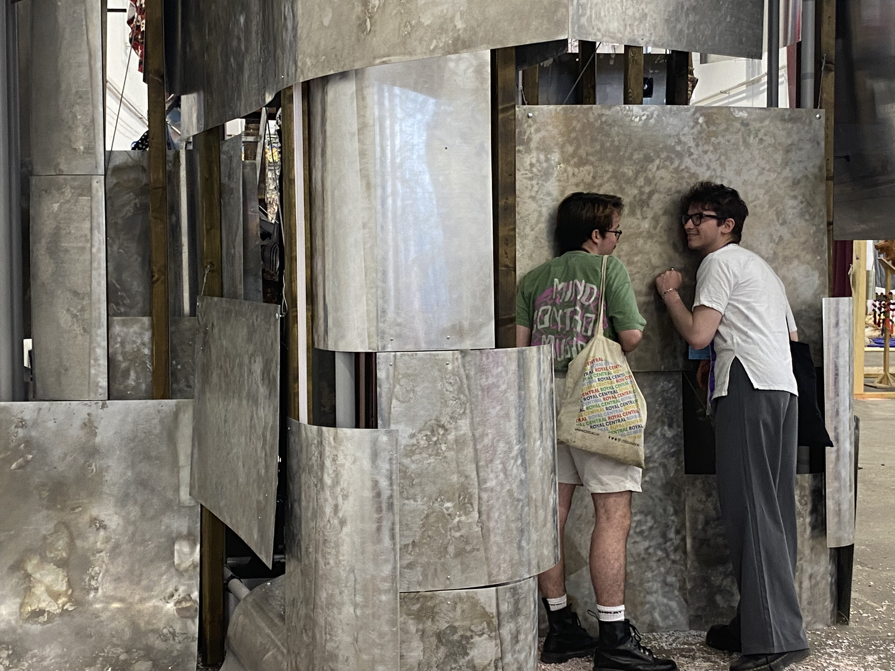
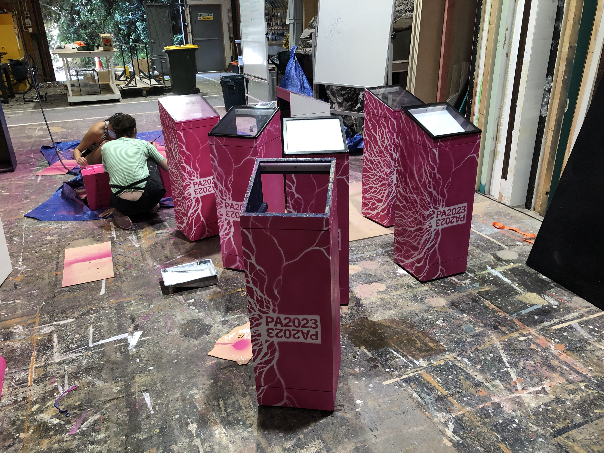
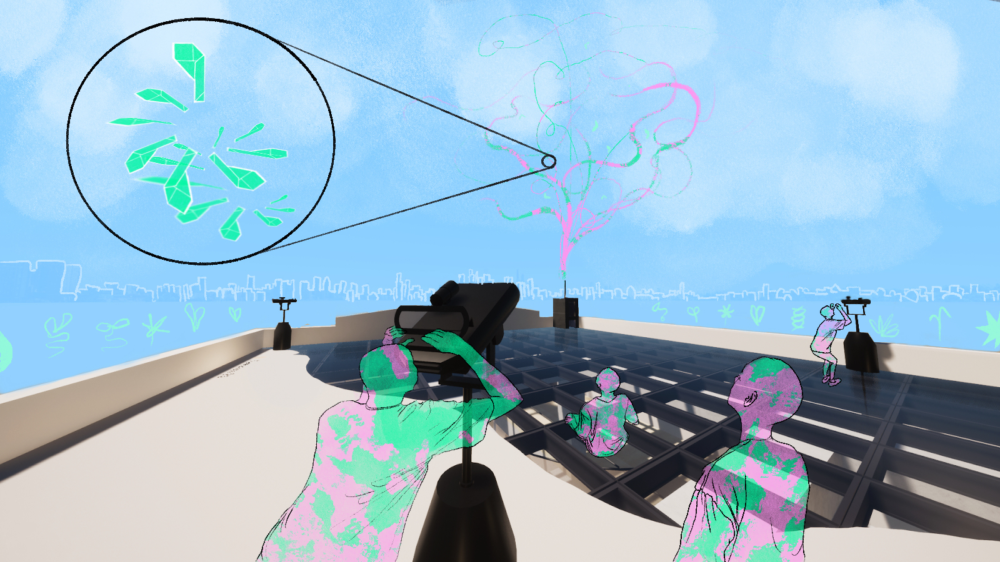
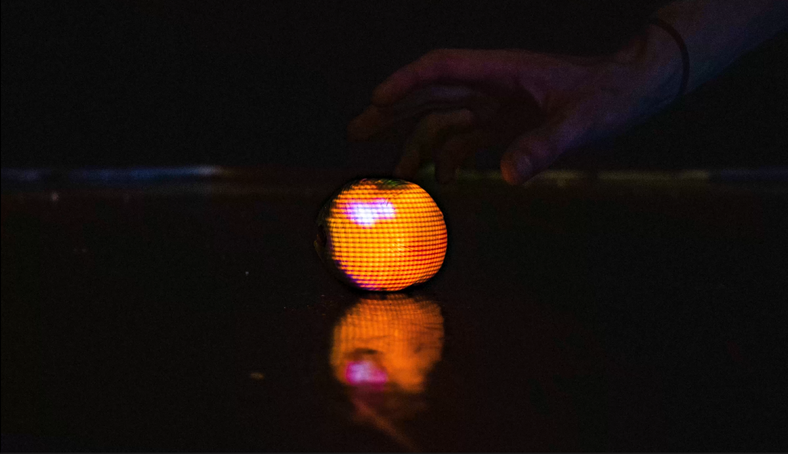

Josef Belton
cv
new smart city

As Wellington city gradually implements its digital twin we are given an opportunity to reflect on the culture of digital twins and simulations and the relationship between physical spaces and their digital replicas. Digital space is not infinite, it takes physical material to construct and maintain, and efficiency and technified objectivity are ideals which tend to homogenise a variety of needs into a harmful majoritarian common good. Technological solutions position themselves as points of progression, but obscure their own processes of creation and eventual outcomes. Exploring this: Machine vision, journeys and processes of manufacturing and assembly, human interpretation, and a quantification of biological and ecological conditions are some aspects of the digital twin of Wellington that inspired New Smart City’s interactive works
[ more photos ]
traces of connection

Traces of Connection is a multi-lane installation utilising real time tracking with projection media and augmented reality in Te Whanganui-a-Tara. The project seasonally activates five of Te Aro’s laneways to connect our movements with the journeys made by the cities pre-urban creatures. This project is led by connection, guided by the Huia who onced roamed the Wellington hills, acknowledging the layers of existence embedded in space. Huia e huia, tangata kotahi - Huia, your destiny is to bring people together. We hope to connect people, especially tamariki and rangatahi to this place, and to each other. Each laneway has its pre-colonial environment projected within them. As you walk over these projections your footsteps are digitally recorded, accumulating next to the virtual footsteps of critters that once inhabited the site. Moving in real time, the huia, moko kākāriki, or the wētā, leave their traces, being revealed further through an AR smartphone app.
[ more photos ]
metaverse morphosis

Meta(verse)Morphosis is a virtual reality environment that maps and simulates entangled beings throughout Houghton Valley’s rain cycle. This project responds to the anthropocentric habit of hungrily pulling things out of the energy cycles of ‘nature’, accumulating as waste in our landfills. Designed for the present, Meta(verse)Morphosis enables changing perceptions and ways of being by pulling together the Valley's humans, non-humans, futures and pasts into a state of aware coexistence and acknowledged codependence. In the face of ecosystem collapse, degrading soils and waters and accumulating mountains of waste, we desperately need to reimagine our relationship with the world around us. This project proposes that this reimagining could be an interactive experience, an immersive environment, a world within a world. This project was build entirely in Unity, and was later exhibited in the group exhibition Ebb and Flow at FishCube gallery.
[ more photos ]
consumption

Consumption is a proposed human-influenced eco-structure located in the once wetland hub of wheat growing that is rural Ashburton. Questioning notions of inhabitation in the Capitalocene, Consumption is imagined over three moments in time as it is transformed by human and non-human agents. The learning of waiata is woven throughout these moments, ingesting the interaction between material, human and non-human beings. In the first moment the native mycelium Pleurotus Parsonsiae is introduced to the foreign but locally sourced wheat straw, organised into panels by human actors. Designed to encourage a humidity comfortable for micro-life, the second moment occurs when the space is vacated and closed to humans. Inhabitation is a privilege, one that we have to let go of if we value life other than our own. Curated by human hands, the eco-structure envelopes itself in a competitively gnawing mass of symbionts. Lignan and mushrooms consumed, nails eroded, the final moment sees the pavilion digested into pure energy, the circular energy of life. By questioning the Capitalocene we see that inhabitation here looks like phosphorus fueled fields of infinite expansion, mirrored in the relentless hunger of mycelium. The difference is that humanity accumulates its excesses, while mycelium breaks them down and passes them on.
[ more photos ]
nzpq23 kaemiemi

Throughout 2023 and 2022 I was an intern with NZPQ23 through the development and production of Ka emiemi, which was exhibited at the 2023 Prague Quadrennial.
Ka emiemi was Aotearoa’s contribution to the Countries and Regions exhibition at the Prague Quadrennial of Performance Design and Space (PQ). It was a collaborative co-creation of eight artists from a diverse range of practice backgrounds and disciplines, each reflecting a facet of the wide ranging performance design landscape of Aotearoa. The title of this work, Ka emiemi, was gifted to the project by Te Matahīapo before the artists began creating together. It holds the curatorial intention for NZPQ23, and describes coming together to assemble, to create. The material processes expressed through this work are colliding and orchestrated. This is also true of the co-creation process that was itself composed of instances of structure and chance. Ka emiemi the installation is a multi-media work consisting of a tall structure, with a series of resonating panels suspended around a steel skeleton. These panels served as speakers and vibrating surfaces that played a 12 hour long sequence. Sound was played through 8 spatialized exciters resonating metal sheets at a range of heights inviting different intimacies with the audience. The sonic score built through an intense layering of textural reverberance creating wider fields of sound with each passing hour. Above a stuttering brush swept across a perforated roof allowing for fine hand milled paper rocks to skim and slide down the aluminum panels. Material that evaded these apertures collected on the rolled eave of the roof accumulating into a mass reaching tipping points unknown to the audience and designer. These chance moments of material processes coming together, collecting, dispersing and collapsing captures the precarious serendipity of our ecological and anthropogenic systems.
[ more photos ]
performance arcade 2023

I worked as a spatial design intern at the 2023 Performance Arcade, titled Hikoi te Whenua. At 2023’s festival the live art and performance pieces were much further spread apart than usual, which lead our team to have more opportunity to develop spatial signage. In this work I was involved in the design, fabrication, and installation of informational backlit plinths, signage and wayfinding.
[ more photos ]
sorry about your head pukeahu

these visualisations tracks the various cycles of destruction and creation bound to the history of Pukeahu, culminating in the building Te Ara Hihiko. Given by Ngai Tara, the name Pukeahu speaks to the sacredness of the hill. Te Ara Hihiko is described as a living building for its pragmatic functionality, but it’s true life comes from the creative work produced by the students it harbours. This energy communicates with the sacred mauri of the hill it intersects with, becoming a kind of gesture of remediation to the 25 meters of earth scraped off the top of Pukeahu through its various stages of colonial occupation. Sorry for cutting off your head Pukeahu. We can only learn to know better in the future.
[ more photos ]
a plant in the wrong place

A Plant In The Wrong Place is a speculative design that responds to the process and practice of Ann Hamilton’s installation artworks. The design examines the processes of labour, history of the space through tie, and the role of a performer in an installation. In her residency, Hamilton creates a work that draws from the social history of its space. This is conveyed in the context of Morrisons building as an industrial printworks, pre 1855 earthquake Te Aro pā as a coastal settlement, and Te-Whanganui-a-Tara as a land once covered in gardens. At the ground level people are prompted to make a selection out of the exhibited seeds on the first and second floor. These dormant seeds are taken to an industrial machine, where they are processed into a reconstructed piece of paper, folded into a flying seed, and launched into the wind currents above the city. The body powered machine becomes a narration of decolonisation which requires everyone to work together towards this outcome. The work evolves over time as the seeds find their place amongst the manicured lawns and cracked asphalt. In this way Hamilton’s work extends past the interior space of the Morrisons building and up to the scale of the city.
[ more photos ]
scenography for the writer

This set design of Ella Hickson’s The Writer imagines every object and furnishing that features in the play to be painted white, with an image of what the original item was projected back onto it. Tension is created when the illusion is broken by the actors walking in front of or moving the objects away from their projections, revealing the blank white items as they truly are, blank shapes that take on the form of what is projected over them. The creation of blank surfaces and projected exteriors is a response to the discussion Hickson raised around the state of theatre as designed to ‘perform well at the west end’; theatre that is designed to present well but which is lacking in critical depth and meaning. Act 3 represents artistic freedom and living truthfully. My stage design imagines this act as the only act in which the objects appear as their true selves, as opposed to a dislocated form and facade. The sweeping up and painting over of the props from act 3 are symbolic of the patriarchal, heteronormative nature of traditional theatre. In act 4 the writer (the character) describes the events of act 3 as being the moment that she felt was most real and true in her life. The set design imagines each object in this act as unpainted, unprojected, real objects. These objects are then left on stage to be gentrified or brought back into line by a performer acting as a stagehand. After turning the projector back on, to the beat of a crackling radio the performer sweeps up the monumental truth bearing chalk circle, and casually paints over each object on the stage, lining them back up with their respective projection.
[ more photos ]